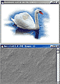
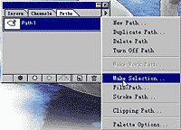
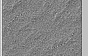
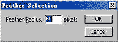
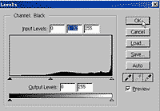
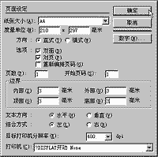

|
|
| 当前位置：电脑报电子版 > 1999 年 > 34 期 > OA专刊 > 用Photoshop、Pagemaker设计宣传画 |
| 《 用Photoshop、Pagemaker设计宣传画 》 |
| 一幅精美的宣传画，或温馨亲切，或不由自主地被它震撼，或是能引起内心深处潜在的某种共鸣……总之，它能让人感受到美的气息。电脑设计出来的艺术品其魅力能达到较高的境界。利用Photoshop、3Dmax等图像软件，按构思进行造型、特技处理，再在PageMaker或是CorelDRAW等众多排版软件中进行平面构图，这是较为实用的方法。 PageMaker填补了传统桌面出版和电子出版之间的隔阂，几乎把印刷设计师要求的所有功能同创新的网络出版工具结合了起来。对于在创建和打印各种商业文档时，要求输出达到最佳质量的使用者而言，PageMaker是首选的页面排版软件。它包含了数百个具有专业设计风格的、便于灵活使用的模板。而图片在要求特殊处理的情况下，就是Photoshop大显身手的时候了。当然，要想达到完美境界，除了对软件本身功能熟悉外，还应具备一定的专业知识。下面我们以一张公益性的宣传画为例，着重于Photoshop 50和PageMaker 60的综合运用，这只是展示一种创作方法，希望大家能举一反三，创意的空间是无限的。 一、Photoshop中图片处理部分 1素材收集：每件作品的创意点不同，完全可根据设计者自己的要求而定。而对素材的处理虽然在Photoshop中看似简单，但在最后的构图工作中它会直接影响到作品的视觉效果，所以，笔者建议，在对素材进行处理之前，最好先在初稿中勾勒出作品轮廓，否则可能会事倍功半，这一点非常重要。2素材处理：分别打开天鹅和沙地的图片(图1)。在天鹅图片窗口中，点击工具板上的“Path”（路径）命令，勾出天鹅轮廓，按下“F7”键，在图层控制面板中，选取“Path”项，鼠标左键点住“Path 1”（路径1），使其变成当前路径，然后单击图层面板右上角的三角形，选取“Make Selection”（转化为选择区）命令(图2)，将路径转换为选择区；选取“Select”菜单下的“Inverse”（反选）命令，将天鹅选择区以外的多余部分删去。 打开沙地图片，为了使画面在视觉上流畅，不至于生硬，将沙地进行圆形羽化处理：在工具面板中选取“圆形选取”工具，在沙地图片中画一个适当大小的圆(图3)，选取“Select”菜单下的“Inverse”（反选）命令，再选取“Select”菜单下的“Feather”（羽化）命令，出现对话框，输入值“60”按“OK”按钮确认(图4)，再按下“Delete”键，删除选择区部分，产生羽化效果，选取“Edit”菜单下的“Transform”（自由变形）命令，将已羽化后的沙地拉出一定透视效果。 3图片结合：选取“File”菜单下的“New”（新建）命令，新建一个文件，将沙地和天鹅按比例结合起来(图5)，选取“Layer”菜单下“Merge Visible”（合并所有层）命令，将所有图层合并后，我们发现天鹅底部和沙地接合得极不自然，可用工具板上的“Blur Tool”（细部模糊）工具将这里模糊化，这样看起来就更加柔和了。 4色彩调整：选取“Image”菜单下“Adjust\Levels”（色阶调整工具）对合成后的图片颜色进行调整(图6)，通过预览，确定效果后按OK键即可。 选取“File”菜单下的“Save As”（另存）命令，将文件存储为“1111TIF”，最后退出Photoshop系统。 二、PageMaker中构图部分 1页面设置：打开PageMaker后，在“文件”菜单中选取“新建”命令，出现对话框，在“质量单位”项分别输入数值“210”和“285”，表示宣传品的尺寸为21cm和285cm；在“边界”项的内部、外部、顶部、底部都输入数值“3”，然后按“确定”按钮即可(图7)。2图片置入：选取“文件”菜单下的“置入”命令，出现对话框，选择要置入的图形文件1111TIF，按下“打开”键钮，在随后弹出的对话框中选择“是”按钮，将图片放在页面的上方合适的位置。 3元素组合：在工具板中选择“T”（文字输入）工具，在工作区中任意地方按住鼠标左键不放，由左至右拉动，然后输入文字内容：“进化？”，将文字中的“？”选成反白状(图8)，然后选取“编辑”菜单下的“剪切”命令，在另一空白区按住鼠标左键不放，由左至右再次拉动一个新的文字输入行，选取“编辑”菜单下的“粘贴”命令，将“？”放入另一文字输入行，再到“文字”菜单下的“字体”等命令或“窗口”菜单下的“控制板”对字号以及字体的设置进行操作。用上述方法，将全部文字输入编排后，最后完成的宣传画如图9所示。 |
| 下载本期推荐软件 | 页 首 |
| 《电脑报》版权所有，电脑报网站编辑部设计制作发布 |